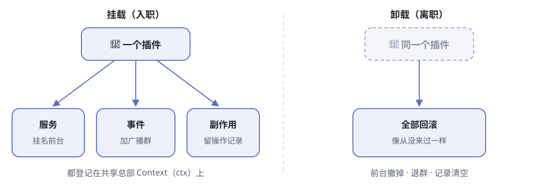
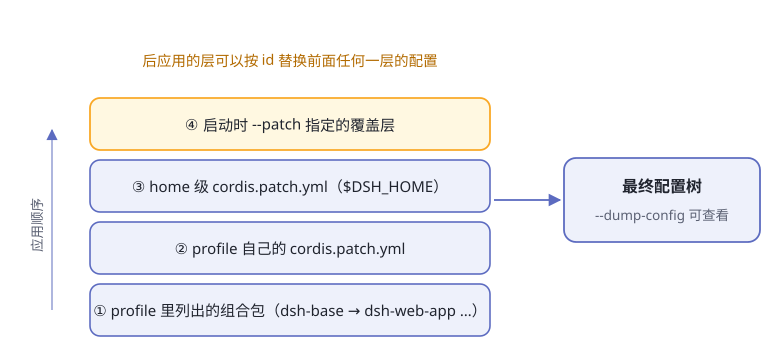

第4章 一切皆插件¶
假设你想把 dsh 的模型供应商从 DeepSeek 换成另一家。一个常见做法是找到调用模型的核心代码，修改它，再重新编译整套应用。
dsh 给出的答案更大胆：模型适配器不是核心代码里的一个分支，而是插件树上的一个节点。工具、会话日志、agent loop（智能体循环）、Web 界面也采用同一种组织方式。
这就是官方所说的 “一切皆插件”。不过，这一章先不急着相信这句话。我们要用三个问题检验它：
- 运行中的 dsh，能不能把自己的插件树展示出来？
- 插件卸载以后，它留下的监听器和资源会不会一起消失？
- 更换一个实现时，其他部件是否只依赖稳定接口，而不依赖具体实现？
阅读提示 本章保留“公司总部”和“换零件”的类比，但不会停在类比上。每个关键结论后面都给出配置、源码或运行证据。
证据基线 本章核对的是 DeepSeek Harness 提交
99f6f02，验证日期为 2026-08-26。dsh 尚处于开发者预览阶段，命令、包名和配置以后可能变化。
先把“一切皆插件”变成可以验证的话¶
“插件很多”不能证明“一切皆插件”。一个项目完全可以把外围功能做成插件，却把真正重要的决策锁死在核心代码里。
dsh 的主张更具体（表4-1）：
表4-1 三个可以被检验的主张
| 主张 | 应该观察到什么 | 反例是什么 |
|---|---|---|
| 产品部件来自组合 | 启动前能看到模型、工具、日志、循环和界面对应的配置项 | 关键部件藏在固定启动代码里，配置树中不存在 |
| 插件贡献是可逆的 | 卸载插件时，它注册的资源、监听器和子插件被撤销 | 插件卸载后仍留下定时器、监听器或旧服务 |
| 消费方依赖接口 | 更换提供方不要求修改所有调用者 | 调用者直接导入并判断某个具体实现 |
后面的内容都围绕这三条展开。这样，“一切皆插件”不再是一句宣传语，而是一组可以查证、也可能被证伪的工程判断。
第一份证据：让 dsh 打印自己的插件树¶
在 DeepSeek Harness 仓库根目录执行：
pnpm dsh --profile web --dump-config
这个命令不调用模型，不需要 API Key。它会把 web profile 最终合成的配置树输出为 YAML。下面是本次实际输出中截取的三组条目：
# == @deepseek-ai/dsh-base
- id: llm
name: '@deepseek-ai/dsh-llm'
# == @deepseek-ai/dsh-base
- id: agent-loop
name: '@deepseek-ai/dsh-agent-loop'
config:
agents: []
# == @deepseek-ai/dsh-web-app
- id: web-runtime
name: '@deepseek-ai/dsh-web-app'
inject:
- webStartup
这里至少能确认三件事：LLM 能力、默认 agent loop 和 Web 运行时都出现在同一棵配置树里；每个节点都有稳定的 id；输出还标出了节点来自 dsh-base 还是 dsh-web-app。
配置里还有一种更有意思的来源标记：
# == @deepseek-ai/dsh-base, patched by @deepseek-ai/dsh-web-app
- id: tool-pwsh
name: '@deepseek-ai/dsh-tool-pwsh'
disabled: true
这不是另一份 Web 专用工具定义。dsh-web-app 找到 dsh-base 中 id 为 tool-pwsh 的行，并对它应用了 patch。最终输出同时保留“原来从哪来”和“后来被谁修改”的线索。
不过，--dump-config 只能证明产品部件参与了组合，不能单独证明卸载真的干净，也不能证明调用者没有偷偷依赖具体实现。为回答后两个问题，我们还要进入 Cordis。
Cordis：插件怎样互相找到对方¶
Cordis 是 dsh 底下的插件框架。dsh 把它整体放在仓库的 vendor/cordis 中，而不是只依赖一个远端 npm 包。因此这层地基的源码可以被审计、修补和固定版本；本章的所有源码链接也都指向同一个提交，而不是会继续变化的 master。
可以继续用公司的类比理解 Cordis，但每个类比都要对应一个真实机制（表4-2）。
表4-2 类比与真实机制
| 大白话 | Cordis 概念 | 真实作用 |
|---|---|---|
| 公司总部 | Context，代码中常写作 ctx |
保存并解析服务，承载事件与插件生命周期 |
| 入职员工 | Plugin | 在 apply(ctx) 中贡献能力 |
| 带名字的服务台 | Service | 通过稳定的 ctx.<key> 暴露能力 |
| 入职条件 | inject |
声明插件启动前必须具备哪些服务 |
| 公司广播 | Event | 让插件在不知道彼此实现的情况下通信 |
| 离职清单 | Effect / disposer | 卸载时撤销注册和外部资源 |

图4-1 插件挂载时贡献能力，卸载时沿原路撤销
一个插件挂载时，可以提供服务、监听事件、挂载子插件和登记外部资源；卸载时，这些贡献应该沿原路撤销。官方仓库还提供了一套七课的中文 Cordis 教程，可以和本章交叉阅读。
Context：共享总部，不是全局变量袋子¶
Context 表面上像一个共享对象，例如 ctx.tools、ctx.llm、ctx.sessions。但插件不是把任意字段随手塞进去；这些名字由服务机制管理，可以被隔离、替换并跟随生命周期回收。Context 源码显示，它实际是一个代理对象：普通属性读取会经过服务解析器。
这一区别很重要。普通全局变量只解决“大家都能访问”，Context 还要回答“当前作用域该访问哪个实现”“实现何时可用”“卸载后如何消失”。
Service 与 inject：只认服务名，不认柜台后面的人¶
服务按名字挂在 Context 上。下面是几项真实服务（表4-3）：
表4-3 几个真实的服务键
| 键 | 管什么 |
|---|---|
ctx.sessions |
会话日志与事件记录 |
ctx.systemPrompt |
系统提示词片段和工具清单的组装 |
ctx.tools |
工具注册与带策略的执行 |
ctx.agents |
agent 的统一接待入口 |
ctx.agentLoop |
默认的“想一步→干一步”循环实现 |
ctx.llm |
消息、流式事件与模型适配器接口 |
假设一个插件需要执行工具。它声明依赖 tools 服务，然后通过 ctx.tools 调用，而不是直接导入某个工具注册表实现。这就是可替换性的第一半：消费者依赖稳定的服务名和接口，而不是具体提供方。 只要新提供方履行同一接口，消费者不需要知道柜台后面换了人。
如果 tools 尚未出现，依赖它的插件会保持 PENDING，等服务就绪后再启动。配置文件里的上下顺序不负责表达依赖，inject 才负责。
而且 inject 不是只在开机时检查一次。运行中如果提供方被卸载，依赖它的插件也会跟着卸载；服务回来后，依赖方再重新加载。这避免了调用者继续攥着一个已经失效的服务引用，也是“热换零件”能够成立的地基。
Event：不认识对方，也能合作¶
服务适合直接调用；事件适合观察、拦截或扩展流程。例如工具执行前后的策略，不必修改 agent loop，可以监听 tools/* 事件。
Cordis 的事件名和消息格式通过类型声明约束；每类事件还有明确的分发模式（表4-4）。
表4-4 事件的五种分发模式
| 模式 | 怎么走 | 等待吗 | 有返回值吗 | 大白话 |
|---|---|---|---|---|
emit |
监听者按注册顺序观察 | 否 | 无 | 广播通知，喊完就走 |
waterfall |
沿一排负责人传递，每层可包装或短路 | 否 | 有 | 传令审批，能扣下 |
parallel |
所有监听者并发执行 | 是 | 无 | 扇形铺开，等大家都干完 |
serial |
按注册顺序执行 | 是 | 有 | 排队逐个办，收好回执 |
bail |
按序传递，直到有人返回 bail 值停下 | 否 | 有 | 第一个举手的人说了算 |
注意：分发模式不是注释，是公开契约。新事件要用 @mode 标签声明自己的模式，生成目录的脚本会拿声明去核对每一处分发调用点——声明和用法对不上，门禁直接报错。
Waterfall 像一条可包裹的中间件链：监听器调用 next() 才会继续交给下游；不调用就会短路。因此，只负责观察或标注的监听器必须调用 next()，直接返回意味着“这个决策到我为止”。
审批中的 approval/request、模型请求前的 agent/request，以及工具调用前后的策略，都可以借助这种机制扩展流程，而不用互相直接导入。官方的 Cordis 入门把整套关系概括为插件、上下文、依赖注入、类型化事件和可逆 effect。
真正的关键不是“能插”，而是“能拔干净”¶
很多系统都能在运行时注册一个回调，难点是卸载后不留下幽灵资源：重复监听器、没有关闭的定时器、仍占端口的服务器、继续响应请求的旧实现。
Cordis 把插件产生的外部影响记为 effect。effect 在建立资源时返回一个 disposer；插件卸载时，Cordis 会执行这些 disposer。许多内置操作已经属于 effect（表4-5）。
表4-5 已纳入生命周期的注册
| 动作 | 卸载时会发生什么 |
|---|---|
ctx.on(...) 监听事件 |
监听器被移除 |
ctx.plugin(...) 挂载子插件 |
子插件随父插件一起释放 |
| 注册服务 | 提供方卸载时服务被摘除 |
ctx.tools.register(...) 等注册表调用 |
返回的释放函数附着到调用插件 |
Cordis 不知道的资源——例如定时器、连接和文件 watcher——则必须显式包进 ctx.effect()，并返回清理函数。
下面是本章实际运行过的最小探针。把它保存到操作系统临时目录，然后在 DeepSeek Harness 仓库根目录用 pnpm exec tsx <文件路径> 运行：
import { Context } from '@deepseek-ai/cordis'
void (async () => {
const ctx = new Context()
const events: string[] = []
const fiber = ctx.plugin((pluginCtx) => {
events.push('plugin loaded')
pluginCtx.effect(() => {
events.push('resource opened')
return () => events.push('resource closed')
})
})
if (fiber.inertia) await fiber.inertia
await fiber.dispose()
console.log(events.join(' -> '))
await ctx.fiber.dispose()
})()
本次实际输出是：
plugin loaded -> resource opened -> resource closed
这条输出很短，却验证了一个完整因果链：插件加载时资源被建立；调用 fiber.dispose() 后，属于该插件的 disposer 被执行，资源随之关闭。
源码中的链路也能对上（表4-6）：
表4-6 从挂载到清理的源码链路
| 环节 | 源码事实 |
|---|---|
ctx.plugin(...) |
为每次挂载创建一个 Fiber，即插件实例的运行时句柄 |
ctx.effect(...) |
把 disposer 记录到当前 Fiber |
fiber.dispose() |
进入卸载流程并等待清理完成 |
| 多个 disposer | 按相反顺序撤销，适合处理“后建立的资源先关闭” |
具体实现可从 Fiber.effect()继续往下读。官方生命周期教程还演示了定时器如何跟随插件卸载。
失败也必须有明确状态¶
Fiber 不是只有“存在/不存在”两种状态（表4-7）。
表4-7 Fiber 状态机
| 状态 | 含义 |
|---|---|
PENDING |
已声明，但所需服务还未就位 |
LOADING / ACTIVE |
apply 正在运行／已完成 |
FAILED |
加载或配置校验抛出异常 |
UNLOADING / DISPOSED |
正在清理／已经清理完成 |
PENDING 是合法状态，不是错误；提供方可能稍后才挂载。加载失败则进入 FAILED。完整 dsh 启动还会审计没有解析或没有激活的配置项并明确失败，而不是带着半棵插件树假装启动成功。
所以“可逆”不只是为了热更新。它首先是一条资源所有权规则：谁在加载时建立影响，谁就必须在卸载时撤销影响。
“一切”到底有多彻底¶
在 dsh 的产品层，模型适配、工具注册、会话日志、agent loop、Web 界面和安全策略都由插件贡献。官方架构说明明确把这些部件列为可从配置替换的插件。
表4-8 产品部件为什么能被替换
| 部件 | 稳定接缝 | 可以变化的实现 |
|---|---|---|
| 模型调用 | ctx.llm |
DeepSeek 或其他适配器/路由器 |
| 工具执行 | ctx.tools + tools/* 事件 |
工具集合、执行策略、前后置守卫 |
| 会话记录 | ctx.sessions |
持久化与投影实现 |
| agent 驱动 | ctx.agents / ctx.agentLoop |
默认循环或其他驱动方式 |
| 文件与进程能力 | ctx.fs、ctx.subprocess 等 |
本机、沙箱或远端提供方 |
| 交互界面 | 会话事件与 Agent 接口 | Web、CLI、ACP 等入口 |
教程还给出一个典型过程：如果 shell 的提供方被替换，所有注入了 shell 的插件会先卸载，再使用新实现重新启动。消费方不需要逐个修改。
这里需要补一个边界：“没有特权内核”不等于“系统没有不可缺少的基础”。Cordis 的 Context、Fiber、Loader 以及 dsh 的启动代码仍然负责承载、解析和装配插件。
更准确的说法是：dsh 没有一块写死业务能力、只能靠修改核心分支扩展的产品内核。 基础框架当然存在，但模型、工具、日志和循环等产品能力不因此获得特殊地位。
连注册都能分房间¶
插件之间平等，但“谁能看见谁的注册”仍然受 scope（作用域）约束。一项工具、提示词段、变量或监听器可以对所有 agent 全局可见，也可以只归属于一个 agent。
同名项相遇时，带作用域的注册可以在自己的 scope 内遮蔽全局项。这让某个 agent 能拥有专属提示词或工具实现，同时不影响其他 agent。可替换性因此不等于所有东西都暴露给所有人。
Profile：插件不是堆起来，而是分层组装¶
一棵实际运行的插件树通常不是一份巨大 YAML 手写出来的。dsh 从空列表开始，按顺序应用多层 patch（图4-2）。

图4-2 后应用的配置层拥有更高优先级
截至本章基线版本，主要顺序是：
- profile 清单中列出的 bundle，按清单顺序应用
- 当前 profile 的
cordis.patch.yml - Harness home 下的
cordis.patch.yml - 命令行
--patch指定的 overlay，按参数顺序应用
这里有两个需要分清的词（表4-9）。
表4-9 Profile 与 bundle
| 词 | 是什么 |
|---|---|
| profile | 一套具名组装：列出 bundle，保存自身的 patch，并可安装树外插件；web 和 headless 是随发行版交付的模板 |
| bundle | Cordis 配置项及挂载代码的分发格式；它加入的节点仍可被更高层 patch |
每个 profile 都建立在 dsh-base 之上；dsh-web-app 增加浏览器应用，dsh-headless 增加不带服务器的一次性运行器。
实际启动和 --dump-config 共用同一套组合算法。prepareProfile()按上述次序把各层交给 composeEntries()，因此打印出的树不是另一套近似配置，而是对启动组合的离线呈现。
这里还有一个容易踩坑的细节：patch 找到 id 后，会替换该行的整个 config，不是递归深度合并。上层若只写一个新字段，却忘了重述需要保留的旧字段，旧字段不会自动留下。
分层带来的好处是本地改装不必复制整份官方配置；代价是同一个节点可能被多层修改。--dump-config 中的来源注释正是为了解决“最后是谁改了它”的追踪问题。
自修改：可逆不等于没有风险¶
官方 web-cordis 示例允许 agent 检查当前 Cordis 进程，并在内存中挂载或卸载模型编写的临时插件（表4-10）。
表4-10 自指工具的五个动作
| 动作 | 干什么 |
|---|---|
cordis_inspect |
只读查看当前插件和注册项 |
cordis_define |
登记一个模型写出的包，但不运行 |
cordis_run |
在沙箱中启动临时插件 |
cordis_stop |
停止并清理插件，但保留定义 |
cordis_undefine |
必要时先停止，再删除定义 |
这些动态包只存在于当前进程内存：不创建插件文件、不安装依赖、不修改配置，也不会跨重启保留。开发时的 HMR 也依赖同一条纪律：先卸载旧实例、撤销 effect，再加载新代码。
这证明插件树不仅能在启动前组合，也能在运行时改变。但官方同时写明：临时插件可能影响同一进程中的其他会话。换句话说，可逆性解决的是“如何撤销”，并不自动解决权限、作用域和错误代码的风险。
表4-11 插件化设计的收益与代价
| 收益 | 对应代价 |
|---|---|
| 能力可以替换 | 必须维护稳定的服务与事件接口 |
| 注册可以随插件卸载 | 每个外部资源都要正确登记 disposer |
| 配置可分层覆盖 | 最终值的来源更难追踪 |
| 支持运行时自修改 | 必须控制权限、作用域和失败恢复 |
这比“插件很灵活”更接近真实工程结论：dsh 用严格的生命周期和接口纪律，换取运行时的可组合性。
为什么“换零件”成立¶
回头看，“换零件”不是一个点子，而是三件事合在一起（表4-12）。
表4-12 换零件的三个条件
| 条件 | 机制 | 结果 |
|---|---|---|
| 可换 | 服务按名字消费，消费方不导入提供方 | 配置里换提供方，消费方不必修改 |
| 可撤 | 每个注册都是 effect，卸载即回滚 | 热替换和自修改出错后可以撤销 |
| 可叠 | 配置分层组合，后层按 id 修补前层 | 不改源码、不重新编译也能改装 |
缺少任何一条，“一切皆插件”都会退化成口号：只有可换而不可撤，会留下旧资源；只有可撤而不可叠，每次仍要复制整套配置；只有可叠而没有接口隔离，换实现仍会牵动所有调用者。
🧪 本章实验¶
实验 4-1 ★｜比较两棵真实配置树 目标：验证 Web 和 headless 形态由不同插件组合产生，而不是启动代码中的两个固定分支。 步骤：在 Harness 仓库根目录分别运行
pnpm dsh --profile web --dump-config和pnpm dsh --profile headless --dump-config。在 PowerShell 中可将输出接到Select-String "agent-loop|web-runtime|headless"，POSIX shell 可使用grep -E。 验收：两份输出都能找到基础能力；web-runtime只属于 Web 组合；每个命中项附近能看到来源层注释。实验 4-2 ★★｜亲眼看见资源被撤销 目标：验证插件卸载不只是从列表里删除名字，还会执行它拥有的清理逻辑。 步骤：把本章“最小探针”保存到操作系统临时目录，在 Harness 仓库根目录执行
pnpm exec tsx <文件路径>，运行后删除临时文件。 验收：输出严格包含plugin loaded -> resource opened -> resource closed，并且进程能自行退出。实验 4-3 ★★｜追一条注册的所有权链 目标：从一个真实 dsh 插件中确认“注册属于插件生命周期”。 步骤：任选一个调用
ctx.on(...)、ctx.effect(...)或注册表.register(...)的插件；找到它的apply(ctx)，再沿注册调用查看返回的 disposer 如何附着到 Fiber。 验收：写出四行笔记：谁创建资源、谁拥有 Fiber、谁触发 dispose、资源怎样消失。不要用“框架会自动处理”代替这四个答案。实验 4-4 ★｜数一条真实广播的听众 目标：用项目数据感受插件间的事件协作。 步骤：打开官方事件生产方与消费方矩阵，找到
session/event。 验收：列出至少三个监听它的包，并说明它们为什么不需要互相导入。
本章验证记录¶
表4-13 证据状态（2026-08-26）
| 项目 | 状态 | 说明 |
|---|---|---|
web --dump-config |
本次实际跑通 | 成功输出完整配置树及 bundle/patch 来源 |
| 最小生命周期探针 | 本次实际跑通 | 实际输出加载、打开资源、关闭资源三步 |
| Profile 与配置导出测试 | 本次实际跑通 | profile.spec.ts 与 config-dump.spec.ts 共 20 个测试通过 |
| Cordis 生命周期行为 | 已有源码与官方教程覆盖 | 本次只跑最小探针，没有执行 Cordis 全量测试 |
web-cordis 自修改演示 |
本次未运行 | 需要 DEEPSEEK_API_KEY，这里只核对了官方示例与源码说明 |
这张表刻意把“存在测试”“本次跑通”和“未运行”分开。技术书中的可信度，不来自所有结论都写成成功，而来自读者能看清每个结论究竟站在哪一层证据上。
🤔 思考题¶
- ★ 如果一个插件用
setInterval()建立定时器，却没有放进ctx.effect()，卸载后可能出现什么现象？ - ★
inject为什么比“把提供方写在配置文件前面”更可靠？ - ★★ “没有特权产品内核”和“没有基础框架”有什么区别？为什么要把这两个说法分开？
- ★★ patch 替换整个
config而不做深度合并，减少了哪类歧义，又增加了什么使用成本？ - ★★★ 如果模型可以挂载自己生成的插件，除了可回滚之外，还需要哪些权限与作用域约束？
📝 小结¶
- 先把口号变成可验证主张——能否看见组合、能否干净卸载、消费者是否只依赖稳定接口
- Context 负责解析服务与作用域——它不是随意存放全局变量的对象
- Service、inject 和 Event 解耦插件——调用者不必知道具体实现，加载顺序由依赖表达
- 可逆 effect 是插件化的核心纪律——挂载时产生的影响，卸载时沿所有权链撤销
- “没有特权内核”有边界——Cordis 和启动层是基础，但 dsh 的产品能力不被写死在其中
- Profile 用分层 patch 组装插件树——后层优先，
--dump-config用来源注释解释最终结果 - 可组合性不是免费的——它要求生命周期、接口、配置来源、权限和失败恢复都更严格
下一章，我们不再看静态的插件树，而是跟着一条用户消息走进 agent loop。➡️ 第5章 一次对话的完整旅程